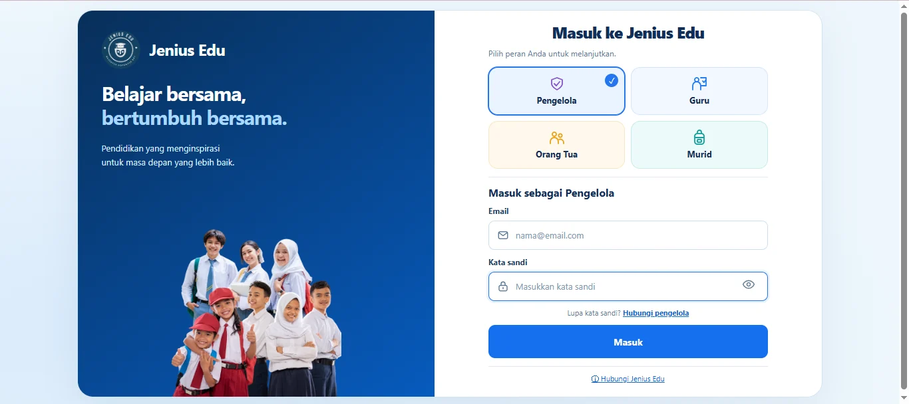
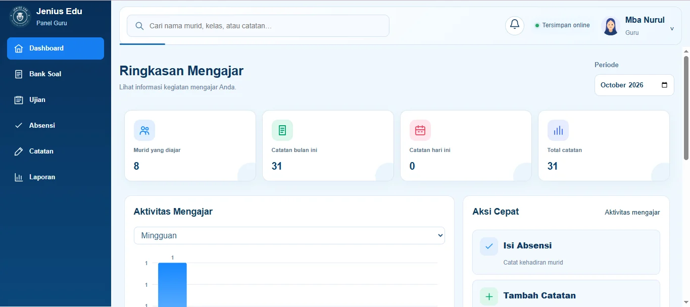
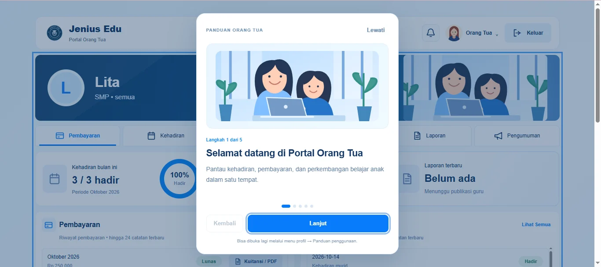
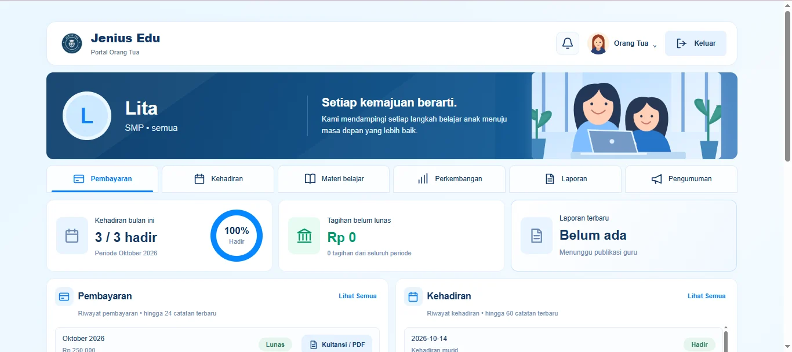
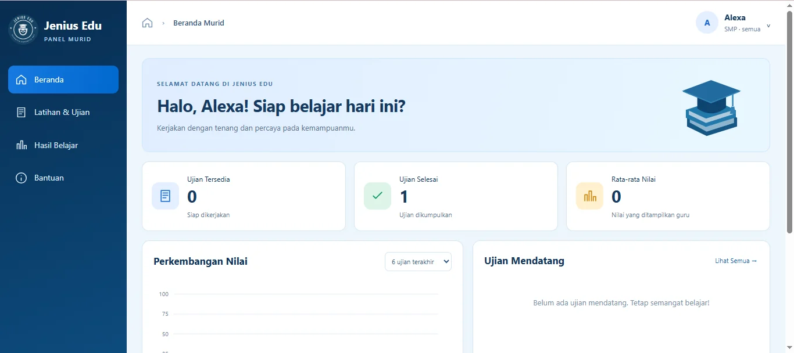

02 / EDUCATION MANAGEMENT
Jenius Education
Sistem Pengelola Bimbingan Belajar
Sistem operasional terpusat yang menghubungkan pengelola, guru, dan orang tua dalam proses administrasi dan pembelajaran.
Lihat Repository ↗Dashboard Pengelola
Ilustrasi konseptual — bukan screenshot atau data operasional asli.
01 / LATAR BELAKANG
Tantangan yang ingin diselesaikan.
Pengelolaan data murid, absensi, pembayaran, dan laporan membutuhkan alur kerja yang rapi dan mudah ditelusuri.
02 / PENDEKATAN
Solusi yang dikembangkan.
Aplikasi dengan panel berdasarkan peran pengguna untuk mengelola informasi operasional, aktivitas belajar, dan laporan secara lebih terstruktur.
03 / FITUR UTAMA
Fitur dan kemampuan sistem.
04 / GALERI PROYEK
Dokumentasi antarmuka.
Klik gambar untuk melihat lebih besar; gunakan tombol panah atau tombol keyboard kiri/kanan untuk berpindah.

Gambar belum tersedia. Unggah berkas ke folder assets/. Gambar belum tersedia. Unggah berkas ke folder assets/.
Gambar belum tersedia. Unggah berkas ke folder assets/.
Gambar belum tersedia. Unggah berkas ke folder assets/.
Gambar belum tersedia. Unggah berkas ke folder assets/.
Gambar belum tersedia. Unggah berkas ke folder assets/.
Gambar belum tersedia. Unggah berkas ke folder assets/.PROSES & IMPLEMENTASI
Teknologi dan pendekatan.
Pendekatan teknis
Web dashboard, database, autentikasi, antarmuka responsif. Fokus pengembangan mencakup kemudahan navigasi, struktur informasi, dan kebutuhan pengguna.
Hasil implementasi
Sistem dirancang untuk memusatkan alur administrasi murid, kehadiran, pembayaran, dan pelaporan dalam panel sesuai peran.
Deskripsi ini menjelaskan kemampuan sistem, bukan klaim peningkatan kinerja yang sudah diukur.